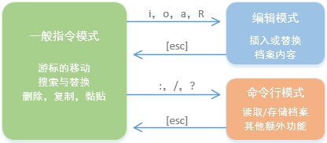

通常来说，vi编辑器有三种模式，分别是一般指令模式、编辑模式与指令行命令模式。 这三种模式的作用分别是：
一般指令模式（command mode）
以 vi 打开一个文件就直接进入一般指令模式了（这是默认的模式，也简称为一般模式）。在这个模式中， 你可以使用上下左右按键来移动光标，你可以使用删除字符或删除整行来处理文件内容， 也可以使用复制、黏贴来处理你的文件数据。
编辑模式（insert mode）
编辑模式可以对内容进行编辑，按下i, I, o, O, a, A, r, R等任何一个字母之后即可进入编辑模式。如果要回到一般指令模式时， 则必须要按下Esc这个按键即可退出编辑模式。
命令行模式（command-line mode）
在一般模式当中，输入:, /, ? 三个中的任何一个按钮，就可以将光标移动到最底下那一行。在这个模式当中， 可以提供你搜寻资料的动作，而读取、存盘、大量取代字符、离开 vi 、显示行号等等的动作则是在此模式中达成的！ 总之，三者的关系可以用下图来概况：

各模式下的快捷键
一般指令模式
| 移动光标的方法 | |
|---|---|
| h 或 向左箭头键(←) | 光标向左移动一个字符 |
| j 或 向下箭头键(↓) | 光标向下移动一个字符 |
| k 或 向上箭头键(↑) | 光标向上移动一个字符 |
| l 或 向右箭头键(→) | 光标向右移动一个字符 |
| hjkl 是排列在一起的，因此可以使用这四个按钮来移动光标。 如果想要进行多次移动的话，例如向下移动 30 行，可以 使用 “30j” 或 “30↓” 的组合按键，亦即加上想要进行的次数（数字）后，按下动作即可！ | |
| [Ctrl] + [f] | 屏幕向下移动一页，相当于 [Page Down]按键 |
| [Ctrl] + [b] | 屏幕向上移动一页，相当于 [Page Up] 按键 |
| [Ctrl] + [d] | 屏幕向下移动半页 |
| [Ctrl] + [u] | 屏幕向上移动半页 |
| n<space> | n 表示数字，例如 20 。按下数字后再按空格键，光标会向右移动这一行的 n 个 字符。例如 20 则光标会向后面移动 20 个字符距离。 |
| 0 或功能键[Home] | 移动到这一行的最前面字符处 |
| $ 或功能键[End] | 移动到这一行的最后面字符处 |
| H | 光标移动到这个屏幕的最上方那一行的第一个字符 |
| M | 光标移动到这个屏幕的中央那一行的第一个字符 |
| L | 光标移动到这个屏幕的最下方那一行的第一个字符 |
| G | 移动到这个文件的最后一行 |
| nG | n 为数字。移动到这个文件的第 n 行。例如 20G 则会移动到这个文件的第 20 行 |
| gg | 移动到这个文件的第一行 |
| n<Enter> | n 为数字。光标向下移动 n 行 |
| 搜索与替换 | |
| /word | 向光标之下寻找一个名称为 word 的字符串 |
| ?word | 向光标之上寻找一个字符串名称为 word 的字符串 |
| n | 重复前一个搜寻的动作 |
| N | 与 n 刚好相反，为反向进行前一个搜寻动作。 例如 /word 后，按下 N 则表示 ?word |
| :n1,n2s/word1/word2/g | n1 与 n2 为数字。在第 n1 与 n2 行之间寻找 word1 这个字符串，并将该字符串取代 为 word2 ， 比如：在 100 到 200 行之间搜寻 null并取代为 NULL 则 :100,200s/null/NULL/g |
| :1,$s/word1/word2/g | 从第一行到最后一行寻找 word1 字符串，并将该字符串取代为 word2 |
| :1,$s/word1/word2/gc | 从第一行到最后一行寻找 word1 字符串，并将该字符串取代为 word2 。且在取代前显示提示字符 给用户确认 (confirm) 是否需要取代 |
| 删除，复制与黏贴 | |
| x, X | 在一行字当中，x 为向后删除一个字符， X 为向前删除一个字符 |
| nx | n为数字，连续向后删除 n 个字符 |
| dd | 删除游标所在的那一整行 |
| ndd | n 为数字。删除光标所在的向下 n 行，例如 20dd 则是删除 20 行 |
| d1G | 删除光标所在到第一行的所有数据 |
| dG | 删除光标所在到最后一行的所有数据 |
| d$ | 删除游标所在处，到该行的最后一个字符 |
| d0 | 删除游标所在处，到该行的第一个字符 |
| yy | 复制游标所在的那一行 |
| nyy | n 为数字。复制光标所在的向下 n 行，例如 20yy 则是复制 20 行 |
| y1G | 复制光标所在行到第一行的所有数据 |
| yG | 复制光标所在行到最后一行的所有数据 |
| y0 | 复制光标所在的那个字符到该行行首的所有数据 |
| y$ | 复制光标所在的那个字符到该行行尾的所有数据 |
| p, P | p 为将已复制的数据黏贴到光标下一行，P 则为黏贴到上一行 |
| J | 将光标所在行与下一行的数据结合成同一行 |
| u | 回退，类似于Ctrl+z |
| [Ctrl]+r | 前进，类似于Ctrl+y |
| . | 重复前一个动作。 如果你想要重复删除、重复黏贴等动作，按下小数点.就好了 |
| 进入INSERT或REPLACE模式 | |
| i, I | 进入插入模式(Insert mode)： i 为从目前光标所在处插入，I 为在目前所在行的第一个非空格符处开始插入 |
| a, A | 进入插入模式(Insert mode)： a 为从目前光标所在的下一个字符处开始插入， A 为从光标所在行的最后一个字符处开始插入 |
| o, O | 进入插入模式(Insert mode)： o 为在目前光标所在的下一行处插入新的一行； O 为在目前光标所在处的上一行插入新的一行 |
| r, R | 进入取代模式(Replace mode)： r 只会取代光标所在的那一个字符一次；R 会一直取代光标所在的文字，直到按下 ESC 为止 |
| [Esc] | 退出编辑模式，回到一般指令模式中 |
| 命令行模式的存储，离开等指令 | |
| :w | 将编辑的数据写入硬盘文件中（保存） |
| :w! | 若文件属性为只读时，强制写入该文件。不过，到底能不能写入，还是跟你对该文件的文件权限有关 |
| :q | 离开 vi |
| :q! | 若曾修改过文件，又不想储存，使用 ! 为强制离开不储存文件 |
| :wq | 储存后离开，若为 :wq! 则为强制储存后离开 |
| ZZ | 若文件没有更动，则不储存离开，若文件已经被更动过，则储存后离开！ |
| :w filename | 将编辑的数据储存成另一个文件 |
| :r filename | 在编辑的数据中，读入另一个文件的数据。亦即将filename这个文件内容加到游标所在行后面 |
| :n1,n2 w filename | 将 n1 到 n2 的内容储存成 filename 这个文件 |
| :! command | 暂时离开 vi 到指令行模式下执行 command 的显示结果。例如 :! ls /home即可在 vi 当中察看 /home 底下以 ls 输出的文件信息 |
| vim 环境的变更 | |
| :set nu | 显示行号，设定之后，会在每一行的前缀显示该行的行号 |
| :set nonu | 与:set nu 相反，为取消行号 |
《鸟哥的Linux私房菜》读书笔记